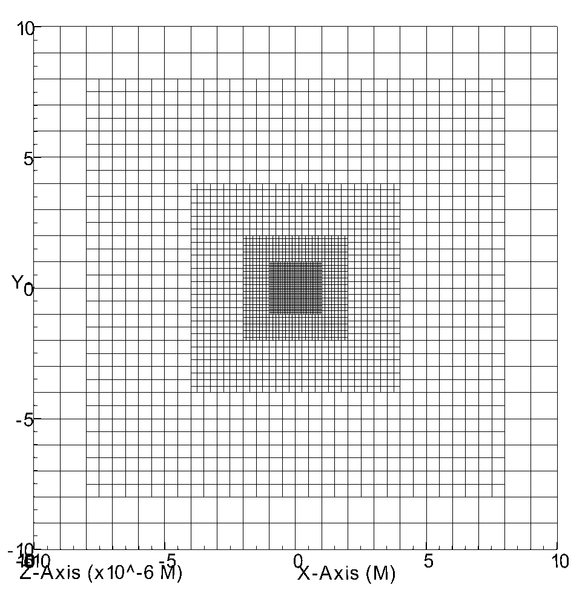
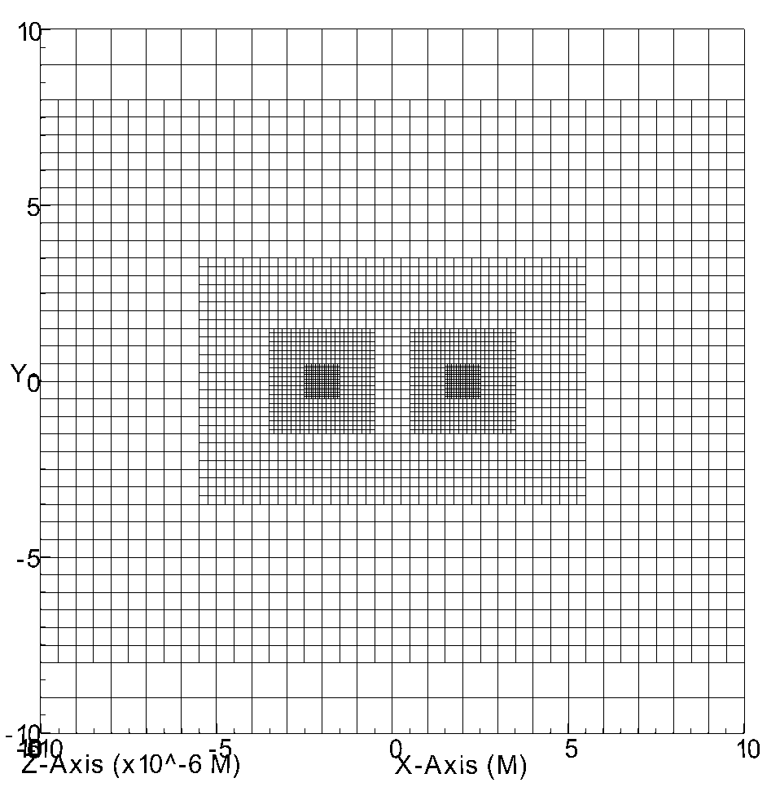

Carpet¶
Carpet is a mesh refinement driver. It knows about a hierarchy of refinement levels, where each level is decomposed into a set of cuboid grid patches. The grid patch is the smallest unit of grid points that Carpet deals with. Carpet parallelises by assigning sets of grid patches to processors.
Each grid patch can be divided in up to four zones: the interior, the outer boundary, and the ghost zone, and the refinement boundary. The interior is where the actual compuations go on. The outer boundary is where the users’ outer boundary condition is applied; from Carpet’s point of view, these two are the same. The ghost zones are boundaries to other grid patches on the same refinement level (that might live on a different processor). The refinement boundary is the boundary of the refined region in a level, and it is filled by prolongation (interpolation) from the next coarser level.
Note
To regrid means to select a new set of grid patches for each refinement level. To recompose the grid hierarchy means to move data around. Regridding is only about bookkeeping, while recomposing is about data munging.
Grid patches that are on the same refinement level never overlap except with their ghost zones. Conversly, all ghost zones must overlap with a non-ghost zone of another grid patch of the same level.
Carpet¶
This thorn provides a parallel AMR (adaptive mesh refinement) driver with MPI.
Parameter¶
Use the domain description from CoordBase to specify the global extent of the coarsest grid.
>>> Carpet::domain_from_coordbase = yes
Maximum number of refinement levels, including the base level
>>> Carpet::max_refinement_levels = 2
Fill past time levels from current time level after calling initial data routines.
The boundary values of the finer grids have to be calculated from the coarser grids through interpolation. An because the time steps on the finer grids are smaller, there is not always a corresponding value on the coarser grids available. This makes it necessary to interpolate in time between time steps on the coarser grids. three time levels allow for a second order interpolation in time.
>>> Carpet::init_fill_timelevels = "yes"
Set up 3 timelevels of initial data
>>> Carpet::init_3_timelevels = "yes"
Order of prolongation operator in space and time
>>> Carpet::prolongation_order_space = 5 >>> Carpet::prolongation_order_time = 2
Refinement factor
>>> Carpet::refinement_factor = 2
Each coarse grid point coincides with a fine grid point.
>>> Carpet::refinement_centering = "vertex"
File name to output grid coordinates.
>>> Carpet::grid_coordinates_filename = "carpet-grid.asc" [~/simulations/example/output-0000/example/carpet-grid.asc] # grid coordinates # format: map reflevel region mglevel bounding-box iteration 0 maps 1 0 mglevels 1 0 0 reflevels 1 0 0 0 regions 1 0 0 0 0 ([-12,-12,-12]:[12,12,12]:[1,1,1]/[0,0,0]:[0,0,0]/[25,25,25]/15625)
Warning¶
INFO (Carpet): There are not enough time levels for the desired temporal prolongation order in the grid function group “ADMBASE::METRIC”. With Carpet::prolongation_order_time=2, you need at least 3 time levels.
# TODO: email for this question.
CarpetLib¶
This thorn contains the backend library that provides mesh refinement.
CarpetRegrid2¶
Set up refined regions.
Parameter¶
Set up refined regions by specifying a set of centres and radii about them.
>>> Carpet::max_refinement_levels = 5 >>> CarpetRegrid2::num_centres = 1 >>> CarpetRegrid2::num_levels_1 = 5 >>> CarpetRegrid2::position_x_1 = 0.0 >>> CarpetRegrid2::radius_1[ 1] = 8.0 >>> CarpetRegrid2::radius_1[ 2] = 4 >>> CarpetRegrid2::radius_1[ 3] = 2 >>> CarpetRegrid2::radius_1[ 4] = 1 >>> Carpet::refinement_factor = 2
>>> Carpet::max_refinement_levels = 5 >>> CarpetRegrid2::num_centres = 2 >>> CarpetRegrid2::num_levels_1 = 5 >>> CarpetRegrid2::position_x_1 = 2.0 >>> CarpetRegrid2::radius_1[ 1] = 4.0 >>> CarpetRegrid2::radius_1[ 2] = 2.0 >>> CarpetRegrid2::radius_1[ 3] = 1.0 >>> CarpetRegrid2::radius_1[ 4] = 0.5 >>> CarpetRegrid2::num_levels_2 = 5 >>> CarpetRegrid2::position_x_2 = -2.0 >>> CarpetRegrid2::radius_2[ 1] = 4.0 >>> CarpetRegrid2::radius_2[ 2] = 2.0 >>> CarpetRegrid2::radius_2[ 3] = 1.0 >>> CarpetRegrid2::radius_2[ 4] = 0.5 >>> Carpet::refinement_factor = 2
Regrid every n time steps
Warning¶
PARAMETER ERROR (CarpetRegrid2): The number of requested refinement levels is larger than the maximum number of levels specified by Carpet::max_refinement_levels
>>> Carpet::max_refinement_levels = <number>
CarpetIOBasic¶
This thorn provides info output for Carpet.
Parameter¶
Variables to output in scalar form
>>> IOBasic::outInfo_vars = "ADMBase::gxx" ----------------------------------------------- Iteration Time | ADMBASE::gxx | minimum maximum ----------------------------------------------- 0 0.000 | 1.0000000 1.0000000
Warning¶
Reduction operator “maximum” does not exist (maybe there is no reduction thorn active?)
>>> ActiveThorns = "CarpetReduce"
CarpetIOScalar¶
This thorn provides scalar output for Carpet.
Parameter¶
Variables to output in scalar form
>>> IOScalar::outScalar_vars = ""
Write one file per group instead of per variable
>>> IOScalar::one_file_per_group = yes
CarpetIOASCII¶
This thorn provides ASCII output for Carpet. The CarpetIOASCII I/O methods can output any type of CCTK grid variables (grid scalars, grid functions, and grid arrays of arbitrary dimension); data is written into separate files named “<varname>.asc”.
It reproduces most of the functionality of thorn IOASCII from the standard CactusBase arrangement. Where possible the names of parameters and their use is identical. However, this thorn outputs considerably more information than the standard IOASCII thorn. Information about, e.g., the refinement level and the index position of the output are also given. All the output can be visualized using gnuplot.
Parameter¶
Variables to output in 1D ASCII file format
>>> IOASCII::out1D_vars = "ADMBase::gxx" [~/simulations/example/output-0000/example/gxx.x.asc] # 1D ASCII output created by CarpetIOASCII # created on ubuntu by yuliu on Sep 10 2019 at 03:33:33-0400 # parameter filename: "/home4/yuliu/simulations/example/output-0000/example.par" # # gxx x (gxx) # # iteration 0 time 0 # time level 0 # refinement level 0 multigrid level 0 map 0 component 0 # column format: 1:it 2:tl 3:rl 4:c 5:ml 6:ix 7:iy 8:iz 9:time 10:x 11:y 12:z 13:data . . . >>> IOASCII::out2D_vars = "ADMBase::gxx" [~/simulations/example/output-0000/example/gxx.xy.asc] # 2D ASCII output created by CarpetIOASCII # created on ubuntu by yuliu on Sep 10 2019 at 04:14:22-0400 # parameter filename: "/home4/yuliu/simulations/example/output-0000/example.par" # # gxx x y (gxx) # # iteration 0 time 0 # time level 0 # refinement level 0 multigrid level 0 map 0 component 0 # column format: 1:it 2:tl 3:rl 4:c 5:ml 6:ix 7:iy 8:iz 9:time 10:x 11:y 12:z 13:data 0 0 0 0 0 0 0 12 0 -12 -12 0 1 0 0 0 0 0 1 0 12 0 -11 -12 0 1 0 0 0 0 0 2 0 12 0 -10 -12 0 1 . . . 0 0 0 0 0 0 1 12 0 -12 -11 0 1 0 0 0 0 0 1 1 12 0 -11 -11 0 1 0 0 0 0 0 2 0 12 0 -10 -11 0 1 . . . 0 0 0 0 0 0 2 12 0 -12 -10 0 1 0 0 0 0 0 1 2 12 0 -11 -10 0 1 0 0 0 0 0 2 2 12 0 -10 -10 0 1 >>> IOASCII::out3D_vars = "ADMBase::gxx" [~/simulations/example/output-0000/example.par] # 3D ASCII output created by CarpetIOASCII # created on ubuntu by yuliu on Sep 10 2019 at 04:19:51-0400 # parameter filename: "/home4/yuliu/simulations/example/output-0000/example.par" # # gxx x y z (gxx) # # iteration 0 time 0 # time level 0 # refinement level 0 multigrid level 0 map 0 component 0 # column format: 1:it 2:tl 3:rl 4:c 5:ml 6:ix 7:iy 8:iz 9:time 10:x 11:y 12:z 13:data 0 0 0 0 0 0 0 0 0 -12 -12 -12 1 0 0 0 0 0 1 0 0 0 -11 -12 -12 1 0 0 0 0 0 2 0 0 0 -10 -12 -12 1 . . . 0 0 0 0 0 0 1 0 0 -12 -11 -12 1 0 0 0 0 0 1 1 0 0 -11 -11 -12 1 0 0 0 0 0 2 1 0 0 -10 -11 -12 1 . . . 0 0 0 0 0 0 2 0 0 -12 -10 -12 1 0 0 0 0 0 1 2 0 0 -11 -10 -12 1 0 0 0 0 0 2 2 0 0 -10 -10 -12 1 . . . 0 0 0 0 0 0 0 1 0 -12 -12 -11 1 0 0 0 0 0 1 0 1 0 -11 -12 -11 1 0 0 0 0 0 2 0 1 0 -10 -12 -11 1 . . . 0 0 0 0 0 0 1 0 0 -12 -11 -11 1 0 0 0 0 0 1 1 0 0 -11 -11 -11 1 0 0 0 0 0 2 1 0 0 -10 -11 -11 1 . . . 0 0 0 0 0 0 2 0 0 -12 -10 -11 1 0 0 0 0 0 1 2 0 0 -11 -10 -11 1 0 0 0 0 0 2 2 0 0 -10 -10 -11 1 . . . 0 0 0 0 0 0 0 1 0 -12 -12 -10 1 0 0 0 0 0 1 0 1 0 -11 -12 -10 1 0 0 0 0 0 2 0 1 0 -10 -12 -10 1 . . . 0 0 0 0 0 0 1 0 0 -12 -11 -10 1 0 0 0 0 0 1 1 0 0 -11 -11 -10 1 0 0 0 0 0 2 1 0 0 -10 -11 -10 1 . . . 0 0 0 0 0 0 2 0 0 -12 -10 -10 1 0 0 0 0 0 1 2 0 0 -11 -10 -10 1 0 0 0 0 0 2 2 0 0 -10 -10 -10 1
Write one file per group instead of per variable
>>> IOASCII::out3D_vars = "ADMBase::gxx" >>> IOASCII::one_file_per_group = yes [~/simulations/example/output-0000/example/admbase-metric.xyz.asc] # 3D ASCII output created by CarpetIOASCII # created on ubuntu by yuliu on Sep 10 2019 at 04:28:57-0400 # parameter filename: "/home4/yuliu/simulations/example/output-0000/example.par" # # ADMBASE::METRIC x y z (admbase-metric) # # iteration 0 time 0 # time level 0 # refinement level 0 multigrid level 0 map 0 component 0 # column format: 1:it 2:tl 3:rl 4:c 5:ml 6:ix 7:iy 8:iz 9:time 10:x 11:y 12:z 13:data # data columns: 13:gxx 14:gxy 15:gxz 16:gyy 17:gyz 18:gzz >>> IOASCII::out3D_vars = "ADMBase::gxx" >>> IOASCII::one_file_per_group = no [~/simulations/example/output-0000/example/gxx.xyz.asc]
CarpetIOHDF5¶
Thorn CarpetIOHDF5 provides HDF5-based output to the Carpet mesh refinement driver in Cactus. The CarpetIOHDF5 I/O method can output any type of CCTK grid variables (grid scalars, grid functions, and grid arrays of arbitrary dimension); data is written into separate files named “<varname>.h5”. HDF5 is highly recommended over ASCII for performance and storage-size reasons.
Note
The default is to output distributed grid variables in parallel, each processor writing a file <varname>.file_<processor ID>.h5. Unchunked means that an entire Cactus grid array (gathered across all processors) is stored in a single HDF5 dataset whereas chunked means that all the processor-local patches of this array are stored as separate HDF5 datasets (called chunks). Consequently, for unchunked data all interprocessor ghostzones are excluded from the output. In contrast, for chunked data the interprocessor ghostzones are included in the output. When visualising chunked datasets, they probably need to be recombined for a global view on the data. This needs to be done within the visualisation tool.
Parameter¶
Variables to output in CarpetIOHDF5 file format. The variables must be given by their fully qualified variable or group name.
>>> IOHDF5::out_vars = "ADMBase::gxx"
Parallel (chunked) Output of Grid Variables or unchunked of Grid Variables.
>>> IO::out_mode = "onefile" >>> IO::out_unchunked = 1 [gxx.h5] >>> IO::out_mode = "proc" [gxx.file_0.h5] [gxx.file_1.h5] [gxx.file_2.h5] . . .